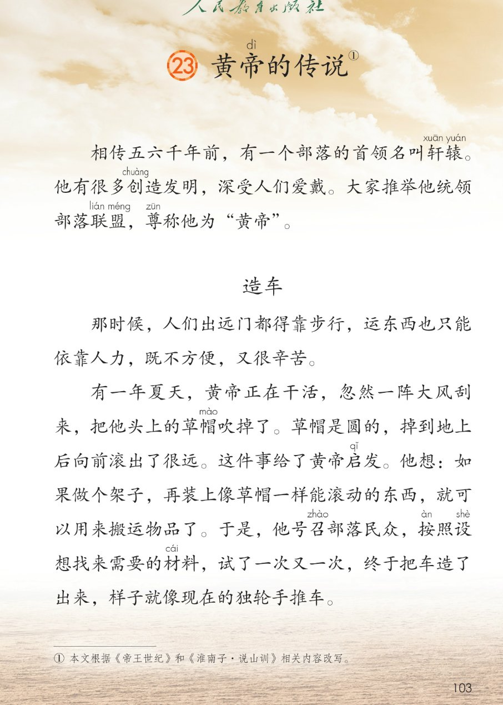
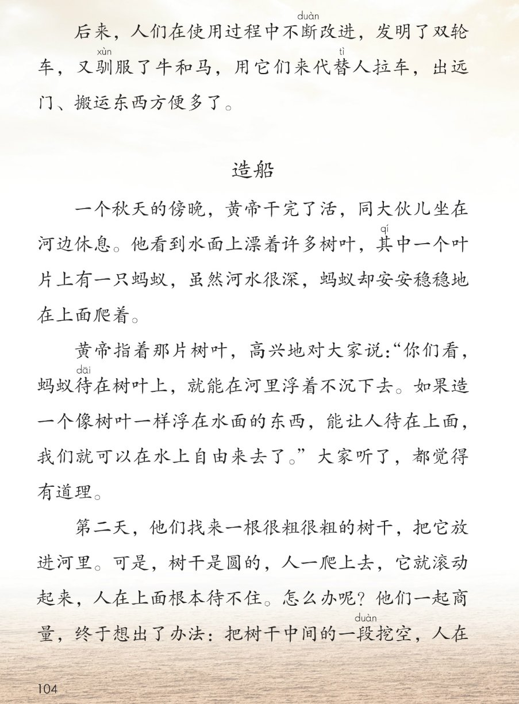
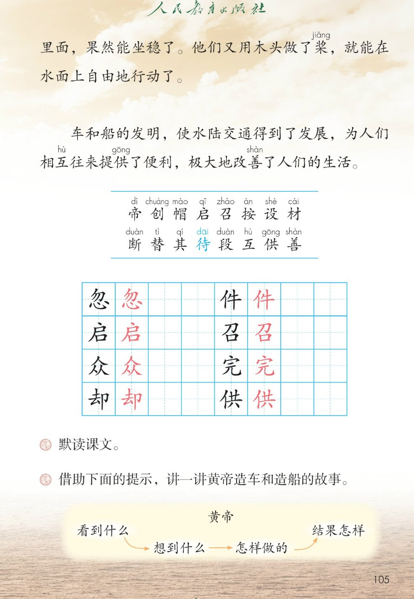

×
🔊 手机听不到声音怎么办？
① 先把手机
媒体音量调大 ，确认没开静音、没连蓝牙耳机；在微信里打开的，点右上角「⋯ → 用浏览器打开」。
② 还是没声音？到应用商店免费下载
Microsoft Edge 浏览器 （它自带朗读发声），用它打开本页面就能出声。
③ 换了 Edge 仍然没声音，说明这部手机的
硬件/系统不支持 网页朗读（多为老旧机型）；近几年买的新手机一般都能正常播放。
→ 打开声音自检
👑 第 23 课《黄帝的传说》· 有声图文带读
统编版语文 · 第八单元·阅读 · 课本 第 103~105 页 · 传说故事
课文 8 段 · 共 20 句
会认字 16
会写字 8
听写词 10
近义词 4 组
深入理解 8 题
本课本领 默读·借助提示讲故事·读传说
🎧 五步学（可随时点任意一句、一个字、一个词单独听）： ① 听读课文 ——引子加造车、造船两个故事，一句一句读，读到哪一句哪一句发光；开「跟读」后读完一句留时间让你自己读。② 学字词 ——16 个会认字、8 个会写字（含书写提示），点一个读一个。③ 词语·听写·造句 ——先读传说词语积累，再听写 10 个词（读两遍→你写→报答案→听示范句），最后听 4 组近义词辨析。④ 深入理解 ——8 道题（认知 / 理解 / 运用 / 拓展），开放题答案不唯一，先想后看。⑤ 分节朗读·想象画面 ——按五步想象黄帝造车造船的画面，再听八位朗读者分段读这篇课文。
📚 第八单元·阅读（本课定位）： 第22课《羿射九日》 → 第23课《黄帝的传说》 → 后续课文等学到再补
点段前的 ①②③④⑤⑥⑦⑧ 听整段
🔁 跟读模式：关
👁 隐藏注音（自测用）
注音只标本课要认、要写的字和课本明确标了音的字，读音来自课本第 105 页生字表；待照课文注 dāi
🎤 朗读要求（老师标准） 帝 读第四声，创 读第四声，帽 读第四声，启 读第三声，召 读第四声，按 读第四声，设 读第四声，材 读第二声，断 读第四声，替 读第四声，其 读第二声，待 在这里读第一声（等待时读第四声 dài），段 读第四声，互 读第四声，供 读第一声，善 读第四声；轩辕 读 xuān yuán，驯 读第四声，桨 读第三声；不添字、不漏字 ：逗号停得短，句号停得长，一句一句读清楚；读出传说的味道 ：造车造船的成功处读得高兴，遇到困难处读得着急；默读不出声、不指读 ：在心里读，眼睛看，脑子想。
①
相传五六千年前，有一个部落的首领名叫轩xuān 辕yuán 。
他有很多创chuàng 造发明，深受人们爱戴。
大家推举他统领部落联盟，尊zūn 称他为“黄帝dì ”。
②
那时候，人们出远门都得靠步行，运东西也只能依靠人力，既不方便，又很辛苦。
③
有一年夏天，黄帝dì 正在干活，忽然一阵大风刮来，把他头上的草帽mào 吹掉了。
草帽mào 是圆的，掉到地上后向前滚出了很远。
这件事给了黄帝dì 启qǐ 发。
他想：如果做个架子，再装上像草帽mào 一样能滚动的东西，就可以用来搬运物品了。
于是，他号召zhào 部落民众，按àn 照设shè 想找来需要的材cái 料，试了一次又一次，终于把车造了出来，样子就像现在的独轮手推车。
④
后来，人们在使用过程中不断duàn 改进，发明了双轮车，又驯xùn 服了牛和马，用它们来代替tì 人拉车，出远门、搬运东西方便多了。
⑤
一个秋天的傍晚，黄帝dì 干完了活，同大伙儿坐在河边休息。
他看到水面上漂着许多树叶，其qí 中一个叶片上有一只蚂蚁，虽然河水很深，蚂蚁却安安稳稳地在上面爬着。
⑥
黄帝dì 指着那片树叶，高兴地对大家说：“你们看，蚂蚁待dāi 在树叶上，就能在河里浮着不沉下去。如果造一个像树叶一样浮在水面的东西，能让人待dāi 在上面，我们就可以在水上自由来去了。”
大家听了，都觉得有道理。
⑦
第二天，他们找来一根很粗很粗的树干，把它放进河里。
可是，树干是圆的，人一爬上去，它就滚动起来，人在上面根本待dāi 不住。
怎么办呢？
他们一起商量，终于想出了办法：把树干中间的一段duàn 挖空，人在里面，果然能坐稳了。
他们又用木头做了桨jiǎng ，就能在水面上自由地行动了。
⑧
车和船的发明，使水陆交通得到了发展，为人们相互hù 往来提供gōng 了便利，极大地改善shàn 了人们的生活。
🤔 想一想（点我可跳过）
点一张图，听读整页

第 103 页 · 引子·造车（上）

第 104 页 · 造车（下）·造船（上）

第 105 页 · 结尾·生字表·课后题
📖 人教版《语文》二年级下册 · 课本第 103~105 页 · 图片仅供个人学习，版权归人民教育出版社所有
点一个字，听读音、词语和课文里的句子
结构、部首、笔画与书写提示为通用规范，供参考，以教材和老师的指导为准
忽
hū
忽然 · 忽冷忽热
8 画 · 上下（心）
勿字斜钩伸展，心字底写稳
件
jiàn
一件事 · 条件
6 画 · 左右（亻）
单人旁写窄，牛字竖要正
启
qǐ
启发 · 启动
7 画 · 半包围（户）
户字头点要正，口字写稳
召
zhào
号召 · 召开
5 画 · 上下（口）
刀字上收，口字下稳
众
zhòng
民众 · 群众
6 画 · 品字形（人）
三人叠成品字形，上小下齐
完
wán
完成 · 干完
7 画 · 上下（宀）
宝盖头写宽，元字写稳
却
què
冷却 · 退却
7 画 · 左右（卩）
去字末横写长，单耳旁竖要直
供
gōng
提供 · 供给
8 画 · 左右（亻）
单人旁写窄，共字横平行
点一行，听词语和课后题的答案
📖 课后题（课本第 105 页照录） ：① 默读课文。 ② 借助下面的提示，讲一讲黄帝造车和造船的故事（黄帝——看到什么 → 想到什么 → 怎样做的 → 结果怎样）。
创造发明 创造 发明
部落联盟 部落 联盟
独轮手推车 独轮 手推车
水陆交通 水陆 交通
读两遍 → 你在纸上写 → 报答案 → 听示范句
准备听写 · 共 10 个词
○ ○ ○
点下面的「开始听写」，听到一个词就写一个词。
▶ 开始听写
🔁 再读一遍
👁 看答案
点词听读，点句子听示范句，再自己说一句
1 忽然 会写字 · 忽
示范句：忽然一阵大风刮来。
✏️ 我也能说：什么忽然怎样
2 一件事 会写字 · 件
示范句：做完一件事，再做另一件事。
✏️ 我也能说：做一件什么事
3 启发 会写字 · 启
示范句：这件事给了黄帝启发。
✏️ 我也能说：什么给了我启发
4 号召 会写字 · 召
示范句：他号召部落民众一起造车。
✏️ 我也能说：谁号召谁做什么
5 民众 会写字 · 众
示范句：他号召部落民众找来材料。
✏️ 我也能说：民众在做什么
6 干完 会写字 · 完
示范句：黄帝干完了活，坐在河边休息。
✏️ 我也能说：干完了什么
7 提供 会写字 · 供
示范句：车和船为人们提供了便利。
✏️ 我也能说：谁提供什么
8 驯服 课文词
示范句：人们又驯服了牛和马，用它们来拉车。
✏️ 我也能说：驯服了什么
9 商量 课文词
示范句：他们一起商量，终于想出了办法。
✏️ 我也能说：和谁商量什么
10 便利 课文词
示范句：车和船为人们相互往来提供了便利。
✏️ 我也能说：什么很便利
相同点 / 不一样在哪 / 各造一句
忽然 — 突然
相同：都表示事情来得快、没想到 。
不一样：忽然 多用于说话、讲故事中间；突然 语气更重，也可作谓语。
忽然：忽然一阵大风刮来。
方便 — 便利
相同：都表示不费事、好办 。
不一样：方便 多写做事省力、顺手；便利 多写条件好、给人帮助。
方便：出远门、搬运东西方便多了。
改进 — 改善
相同：都有变得更好 的意思。
不一样：改进 多指把方法、工具改得更好用；改善 多指把条件、生活变得更好。
改进：人们在使用过程中不断改进。
安安稳稳 — 稳稳当当
相同：都表示平稳、不晃动 。
不一样：安安稳稳 还带着安心、踏实的意思；稳稳当当 只强调不摇晃。
安安稳稳：蚂蚁却安安稳稳地在上面爬着。
既…又… 既不方便，又很辛苦
一次又一次 试了一次又一次，终于把车造了出来
安安稳稳（AABB 式） 蚂蚁却安安稳稳地在上面爬着
果然 人在里面，果然能坐稳了
标「答案不唯一」的题，说得有道理都对
认知 黄帝是谁？大家为什么尊称他为“黄帝”？看解析
🤔 想一想
解析：
部落首领，名叫轩辕
创造发明多，深受人们爱戴
推举他统领部落联盟，尊称黄帝
认知 造车之前，人们出行和运东西有多辛苦？看解析
🤔 想一想
理解 黄帝看到什么、想到什么，才发明了车？看解析
🤔 想一想
解析：
草帽是圆的，向前滚出很远
装上能滚动的东西就能搬运物品
号召民众，试了一次又一次
造出车，像独轮手推车
理解 黄帝在河边看到什么、想到什么，才想造船？看解析
🤔 想一想
解析：
蚂蚁待在树叶上，浮着不沉
造像树叶一样浮在水面的东西
能在水上自由来去
理解 圆树干放进河里遇到了什么问题？他们是怎么解决的？看解析
🤔 想一想
解析：
树干圆，一爬上去就滚动
把树干中间的一段挖空
用木头做了桨
运用 借助“看到什么、想到什么、怎样做的、结果怎样”的提示，把黄帝造船的故事讲给家人听。看解析
🤔 想一想
解析：
看到：蚂蚁待在树叶上不沉
想到：造浮在水面的东西
怎样做：放树干→挖空→做桨
🌈 答案不唯一，说得有道理都对
运用 用“既……又……”说一句话。看解析
🤔 想一想
解析：
既加第一方面，又加第二方面
人、房间、食物都可以
🌈 答案不唯一，说得有道理都对
拓展 车和船的发明给人们的生活带来了什么变化？你觉得黄帝是个怎样的人？看解析
🤔 想一想
解析：
水陆交通发展，生活改善
善于观察，爱动脑筋
留心身边的事，多想多试
点一步，听这一步
1
认识黄帝
2
草帽启发造车
3
改进与驯兽
4
蚂蚁启发造船
5
造福生活
💬 想象支架：先 想认识黄帝 → 再 想草帽启发造车 → 接着 想双轮车驯牛马 → 然后 想蚂蚁启发造船 → 最后 想车船造福生活。
点一张卡，听这一节的句子
🌈 第1节·朗读者
第1节：相传五六千年前，有一个部落的首领名叫轩辕。
💬 引子一段，讲黄帝的来历，读得庄重、敬佩
🌈 第2节·朗读者
第2节：那时候，人们出远门都得靠步行，运东西也只能依靠人力，既不方便，又很辛苦。
💬 造车开头，读出旧日出行的不便和辛苦
🌈 第3节·朗读者
第3节：有一年夏天，黄帝正在干活，忽然一阵大风刮来，把他头上的草帽吹掉了。
💬 草帽启发造车，读得生动，成功处读得高兴
🌈 第4节·朗读者
第4节：后来，人们在使用过程中不断改进，发明了双轮车，又驯服了牛和马，用它们来代替人拉车，出远门、搬运东西方便多了。
💬 改进与驯兽，读得轻快、欣慰
🌈 第5节·朗读者
第5节：一个秋天的傍晚，黄帝干完了活，同大伙儿坐在河边休息。
💬 河边见蚂蚁，读得悠闲又好奇
🌈 第6节·朗读者
第6节：黄帝指着那片树叶，高兴地对大家说，你们看，蚂蚁待在树叶上，就能在河里浮着不沉下去。如果造一个像树叶一样浮在水面的东西，能让人待在上面，我们就可以在水上自由来去了。
💬 黄帝说想法，读得高兴、有信心
🌈 第7节·朗读者
第7节：第二天，他们找来一根很粗很粗的树干，把它放进河里。
💬 树干挖空造船，先着急后欢喜
🌈 第8节·朗读者
第8节：车和船的发明，使水陆交通得到了发展，为人们相互往来提供了便利，极大地改善了人们的生活。
💬 结尾一段，读得郑重，读出车船的大功劳